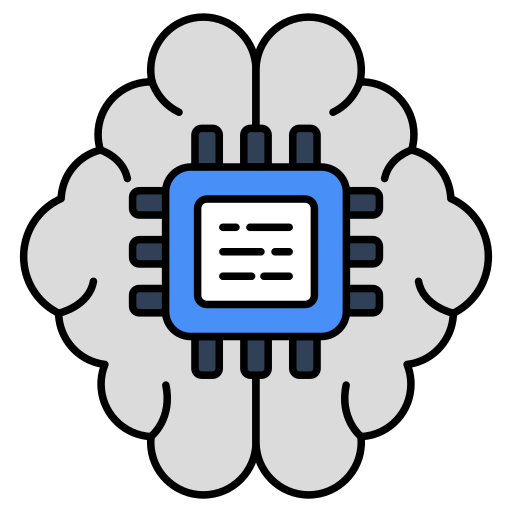

Asisten Cerdas untuk Regulasi Perkeretaapian
RailBot adalah aplikasi chatbot yang dirancang untuk memberikan jawaban cepat dan akurat mengenai peraturan dan standar teknis perkeretaapian di Indonesia.
Coba Aplikasi RailBotFitur Utama RailBot
Jawaban dari Database Resmi
Informasi diambil langsung dari dokumen seperti PD 10 & PM 60 untuk menjamin keakuratan.

Dukungan AI Google Gemini
Jika data tidak ditemukan, AI akan membantu memberikan jawaban yang relevan dan kontekstual.
Antarmuka Chat Modern
Tampilan yang familiar dan mudah digunakan, lengkap dengan fitur suka, salin, dan bagikan respons.